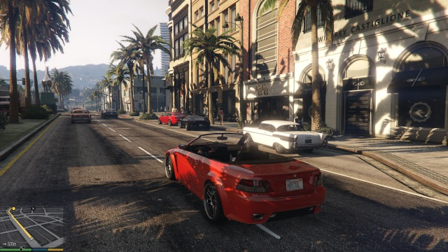
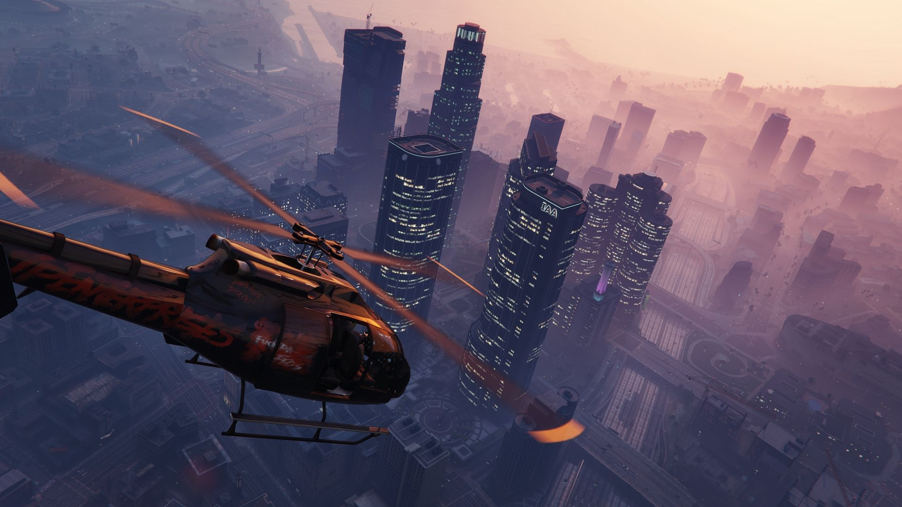
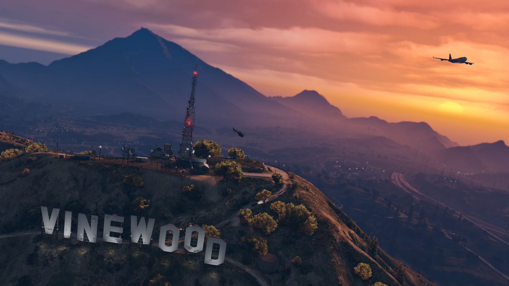
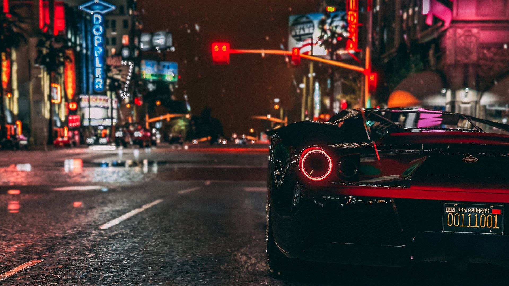
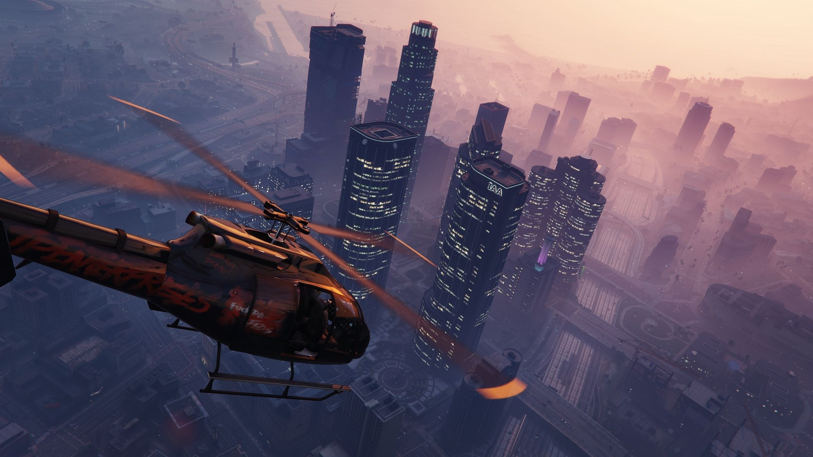
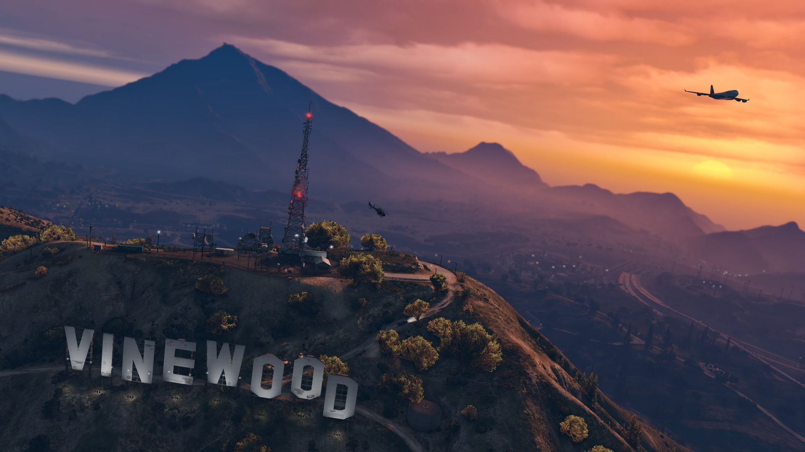
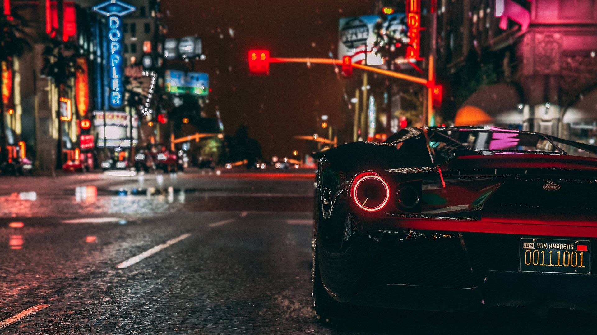

Grand Theft Auto V- це пригодницька відеогра 2013 року, розроблена Rockstar North та видана компанією Rockstar Games. Події відбуваються у вигаданому штаті Сан-Андреас, що заснований на південній Каліфорнії. Сюжетна історія слідує за трьома злочинцями, які перебувають під тиском урядового відомства та авторитетних кримінальних фігур. Дизайн відкритого світу дозволяє гравцям вільно переміщуватися по місцевості Сан-Андреаса та вигаданому місту Лос-Сантос, на базі Лос-Анджелеса.
Гра відбувається з виглядом від третьої, або першої особи, а її світом подорожують пішки або на транспорті. Гравці керують трьома головними героями протягом однокористувацької гри та перемикаються між ними, як під час місій, так і поза ними. Історія зосереджена на послідовних крадіжках, а багато місій передбачають стрілянину та керування транспортом. Система "розшуку" регулює агресію правоохоронців на злочини які вчинив гравець. Grand Theft Auto Online - онлайн мультиплеєр, дозволяє до 30 гравцям брати участь у різноманітних кооперативних та конкурентних режимах гри.
Фото з гри:
 






Нагороди і рекорди
- В жовтні 2013 року гра була відзначена ігровою премією Золотий джойстик-2013 (англ. «Golden Joystick Awards») в категорії «Гра року».
- Також Grand Theft Auto V потрапила в Книгу рекордів Гіннеса одразу в декількох номінаціях.
- Гра, яка за короткий термін (за 3 дні) принесла прибуток у розмірі 1 мільярда доларів.
- Рекорд продажів відеогри в жанрі пригодницького бойовика за перші 24 години.
- Відеогра, що стала хітом продажів за перші 24 години.
- Трейлери з найбільшою кількістю переглядів серед усіх пригодницьких ігор.
- Розважальний продукт, який за короткий термін приніс прибуток у розмірі 1 мільярда доларів.
- Найкасовіша відеогра (у перші 24 години продажів).
- Розважальний продукт, що приніс найбільшу виручку за перші 24 години продажів.
Відео з гри: